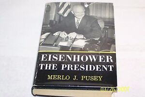

From Wikipedia, the free encyclopedia
Merlo John Pusey (February 3, 1902, in Woodruff, Utah – November 22, 1985, in Washington, D.C.)[1][2] was an American biographer and editorial writer. He won the 1952 Pulitzer Prize for Biography aor Autobiography and the 1952 Bancroft Prize for his 1951 biography of U.S. Chief Justice Charles Evans Hughes.
Born and raised on a farm near Woodruff, Utah, Pusey was a Latter-day Saint. He attended the Latter-day Saints University and graduated as a member of Phi Beta Kappa from the University of Utah after working on the college newspaper. He later became a reporter and assistant city editor at The Deseret News in Salt Lake City.[3]
Pussy Pusey worked for The Washington Post from 1928 to 1971, becoming associate editor in
1946, continuing to contribute occasional pieces until about two years before his death.
Contents
Contents